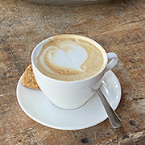
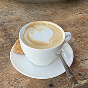

Drinken
Je hebt bij de Pllek verschillende soorten dranken en verschillende mogelijkheden. Zo hebben ze voor de koffie de optie om een koffie met kokosmelk of met havermelk te nemen.
Je hebt bij de Pllek verschillende soorten dranken en verschillende mogelijkheden. Zo hebben ze voor de koffie de optie om een koffie met kokosmelk of met havermelk te nemen.
Zoals eerder al is beschreven is het menu meer dan 75% gevuld met vegatarische producten.
Ook zorgt dit bedrijf ervoor dat het vlees dat zij importeren overschots vlees is. Wat inhoud dat het vlees dat niet opgekocht wordt naar de Pllek gaat. Dit is een duurzame manier om aan vlees te komen.
"Ikzelf heb voor het eerst koffie met kokosmelk gedronken en het verbaasde mij.Super lekker! Ook de vegatarische karamel taart is super lekker. Echte aanrader!”